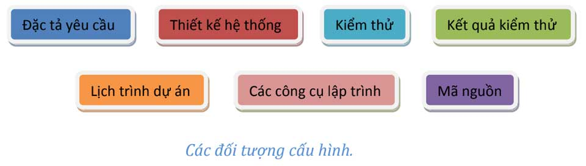
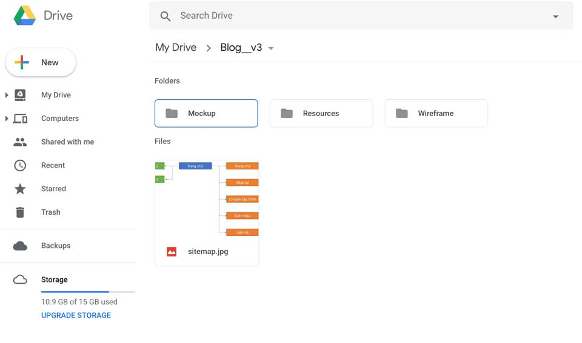
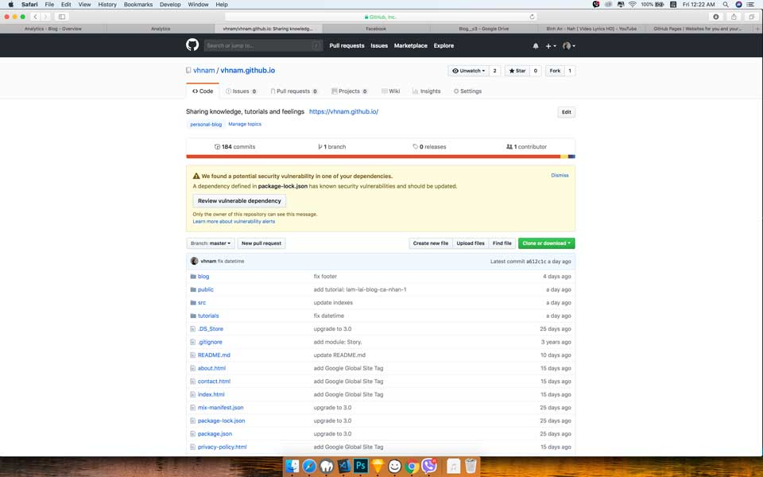
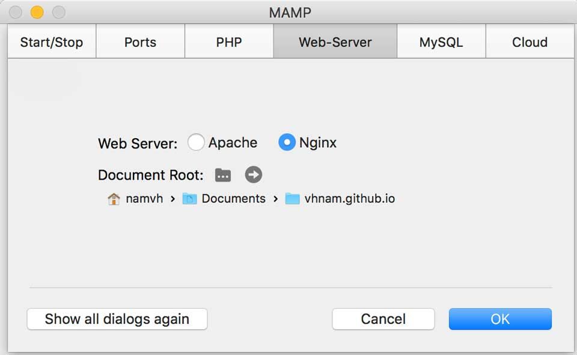

Nội dung
Phần này tớ sẽ giới thiệu các bạn phần quản lý cấu hình của dự án.
- Phần 1: Khởi động
- Phần 2: Thiết kế giao diện
- Phần 3: Quản lý cấu hình
- Phần 4: Bắt đầu với giao diện
- Phần 5: Schema.org du hý
- Phần 6: Metadata và các công cụ theo dõi hoạt động người dùng
- Phần 7: Template Engine
- Phần 8: Deployment
Quản lý cấu hình là gì?
"Quản lý cấu hình là bộ khung tổ chức cho phép chúng ta quản lý sự phát triển của tất cá các sản phẩm trên toàn bộ hệ thống thông qua các giai đoạn phát triển phần mềm."
Ở trong bài viết này, tớ sẽ giới thiệu cách tớ quản lý cấu hình blog như thế nào. Và phần lý thuyết, bạn có thể xem thêm tại các link phía dưới.
- Wikipedia, Configuration management
- CMPIC, What is Configuration Management?
- Association for Project Management, Configuration management
Đối tượng quản lý cấu hình
Để xem nào, blog của tớ cũng không phải là dự án gì to tát cả. Do đó, tài liệu cũng vừa đủ để biết công việc sẽ làm và sau này mở ra coi lại để bảo trì cho dễ. Tớ có một số đối tượng cần quản lý sau.
- Tài liệu thiết kế gồm wireframe và mockup
- Mã nguồn (Source Code)
Và một cái quan trọng nữa là Log - nhật ký làm việc (tức là seri bài viết các bạn đang xem).
Quản lý tài liệu thiết kế
Tớ tạo một folder trên Google Drive để lưu trữ file Sketch và Balsamiq. Còn folder Resources để lưu hình dùng cho blog.
Quản lý mã nguồn
Tớ đã tạo một repository từ năm 2014 đến giờ trên GitHub. Và định dùng GitHub Pages để tạo một website thay vì thuê host. Bạn chỉ cần làm theo hướng dẫn dưới đây là được.
Link: https://pages.github.com
Cấu trúc mã nguồn

Như các bạn đã thấy, code của tớ được phân cấp theo dạng một trang web tĩnh (static web). Do GitHub Pages chỉ hỗ trợ static web nên mình mượn cấu trúc thư mục để làm đường dẫn cho bài viết.
blog/ | các bài viết thuộc mục Nhật Ký node_modules/ | các packages hỗ trợ trong việc code public/ | resources gồm hình ảnh, CSS, JS được public src/ | mã nguồn chính của blog |__ content/ | nội dung các bài viết |__ indexes/ | mục lục của blog và tutorial |__ js/ | code JavaScript |__ scripts/ | code Template Engine |__ scss/ | code SASS |__ template/ | giao diện mẫu để chạy Template Engine tutorials/ | các bài viết thuộc mục Chuyện Lập Trình .gitignore | đánh dấu các file, thư mục không cần thêm vào Git about.html | trang giới thiệu contact.html | trang liên hệ index.html | trang chủ mix-manifest.json | file cấu hình của Laravel-Mix package-lock.json | file cấu hình của Npm package.json | file cấu hình các package sử dụng cho blog privacy-policy.html | trang chính sách bảo mật README.md | file giới thiệu repository robots.txt | file cấu hình cho bot sitemap.xml | file đánh chỉ mục hỗ trợ SEO webpack.mix.js | file cấu hình của Laravel-Mix
Quản lý packages với NPM
Thay vì dùng Bower, Yarn thì mình muốn dùng NPM để đơn giản quản lý package và đơn giản công việc. Các packages mình dùng cho blog gồm:
- Bootstrap - Front-End Framework
- Axios - Thư viện giao tiếp HTTP tại client bằng Node.js, sử dụng promise. Mình thay thế Ajax của jQuery
- PopperJS - Thư viện hỗ trợ popup, một dependency của Bootstrap
- jQuery - Thư viện JavaScript cơ bản, một dependency của Bootstrap
- Laravel-Mix - Thư viện để quản lý và build resources của Laravel, có thể sử dụng độc lập
Lịch trình dự án
Để có động lực hoàn thành công việc, tớ chia ra từng giai đoạn nhỏ.
- Giai đoạn 1: Viết khung sườn của blog. Kết quả mong muốn: tóm tắt CV, sitemap.
- Giai đoạn 2: Thiết kế giao diện. Kết quả mong muốn: wireframe và mockup.
- Giai đoạn 3: Cấu hình project. Kết quả mong muốn: thư mục source code đã cài đặt các package cần thiết, 3 màn hình cơ bản là trang chủ, trang giới thiệu, trang liên hệ.
- Giai đoạn 4: Gắn Schema.org. Kết quả mong muốn: các trang HTML đều đã được tối ưu Schema.org.
- Giai đoạn 5: Hoàn thiện Template Engine. Kết quả mong muốn: Template Engine có thể tạo một bài viết với giao diện có sẵn nhanh chóng.
- Giai đoạn 6: Liên kết với các mạng xã hội. Kết quả mong muốn: Gắn Google Analytics và Facebook Analytics.
Localhost
Có một phần quan trọng không thể thiếu là cấu hình localhost. Tớ cần localhost để gửi request lấy danh sách bài viết theo từng mục như Nhật ký, Chuyện lập trình.
Như đã giới thiệu, tớ sử dụng MAMP để tạo môi trường localhost. Dù bạn sử dụng MAMP, XAMPP, LAMP, LEMP gì đi nữa thì chỉ cần nhớ trỏ đến nơi chứa source code là thư mục root của domain là được. Domain ở localhost chính là localhost hoặc địa chỉ IP 127.0.0.1. Các bạn chọn Document Root là thư mục chứa source code để chỉ cần gõ http://localhost là nó tới thẳng trang chủ, nếu bạn dùng port 80.
Ở localhost, thường bạn phải sử dụng port khác do port 80 đôi khi bị phần mềm khác trưng dụng rồi. Port 80 là port dùng cho giao thức HTTP. Thường là bạn dùng các port như 8080, 8888, 8000. Nhưng ở MAMP thì khác, nó cho phép ta sử dụng Web Server là Apache hoặc Nginx. Với Apache là 8888 còn Nginx là 7888.
Tớ dùng Nginx và điều chỉnh lại Document Root. Bạn vào phần Preferences để chỉnh nhé.
Tổng kết
Tớ đã xong công việc chuẩn bị. Giờ bắt đầu vào công việc lập trình.

Tham khảo
- Ngô Huy Biên, Giáo trình Quản lý dự án (Bản nháp)